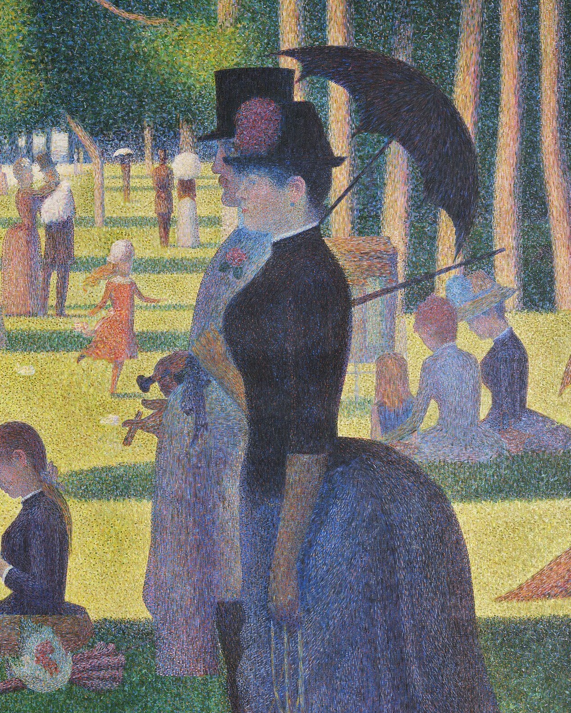
A monkey, a pun, a scandal, a fading colour.
Swipe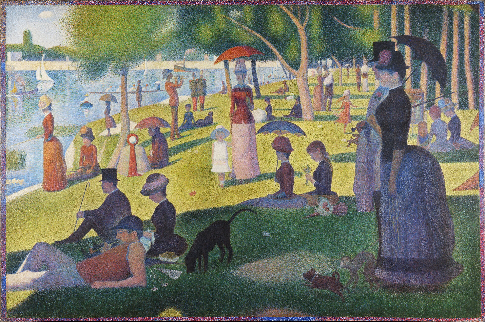
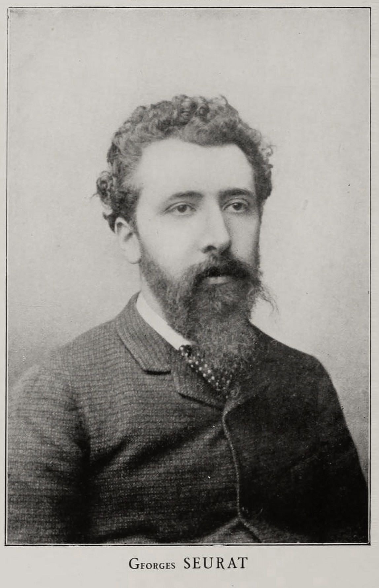
Georges Seurat, c. 1888Seurat began this canvas in May 1884. Quiet, secretive, hooked on the science of colour. He gave it two years of his life — and he died at just 31.
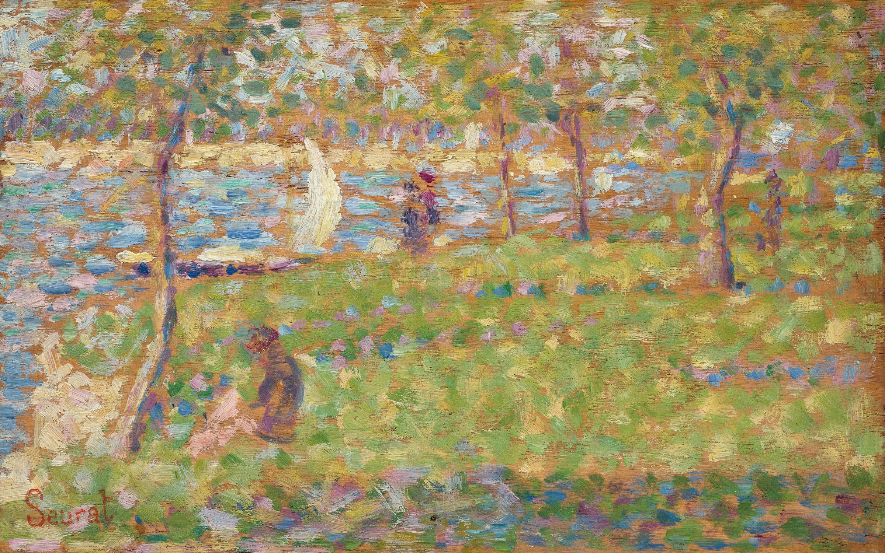
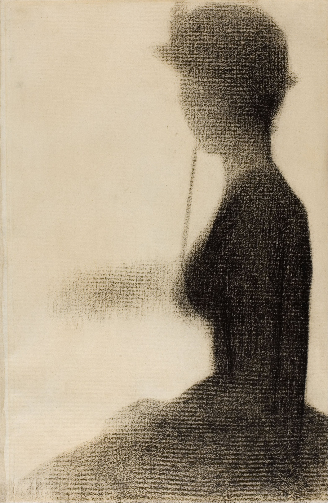
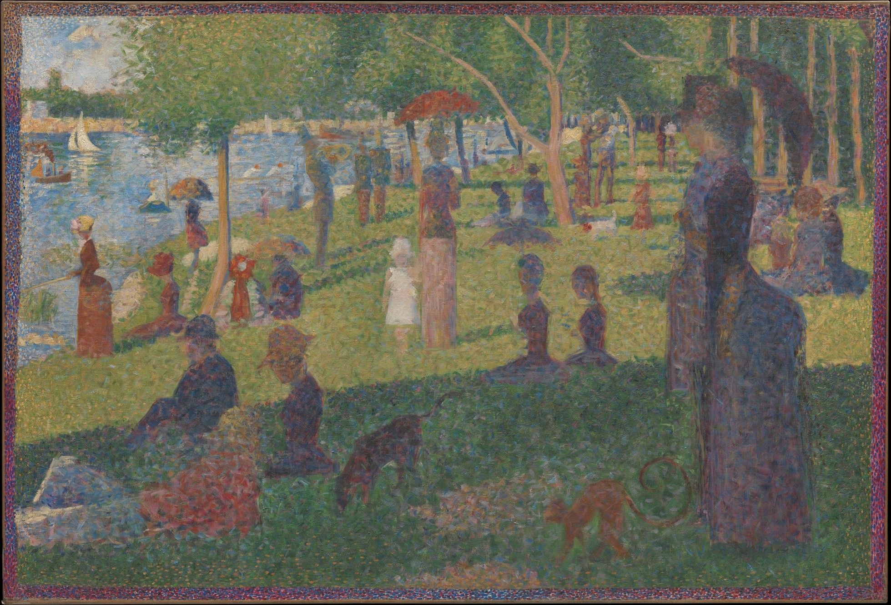
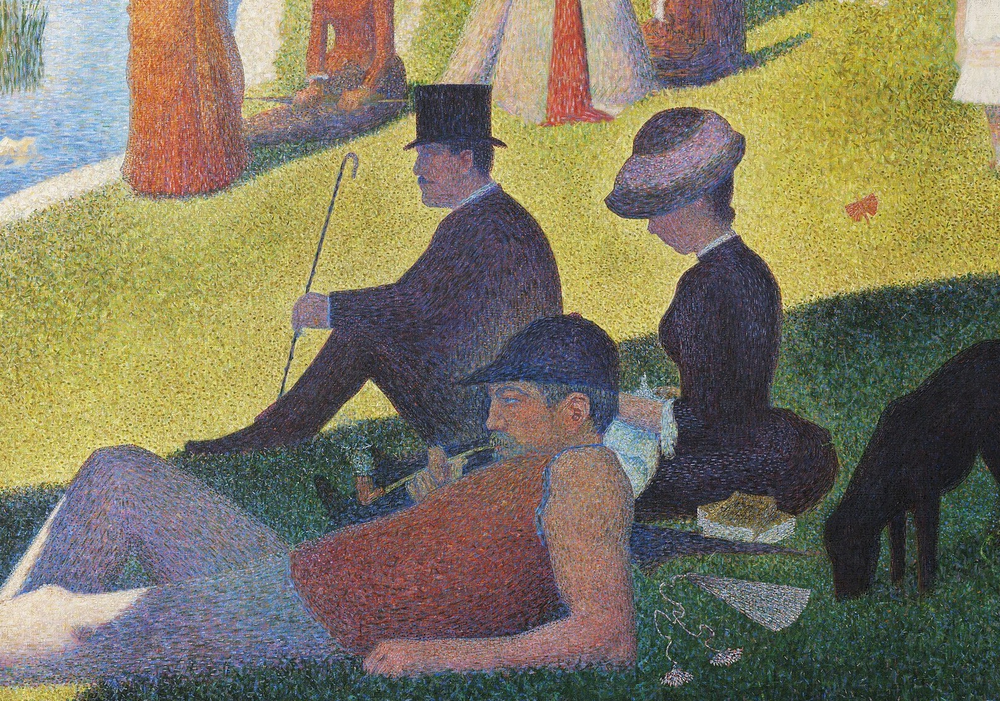
La Grande Jatte was where Paris spent its day off. A gentleman in a top hat (1). A rower in a sleeveless vest, pipe in hand (2). Side by side on one lawn — and nobody talks.
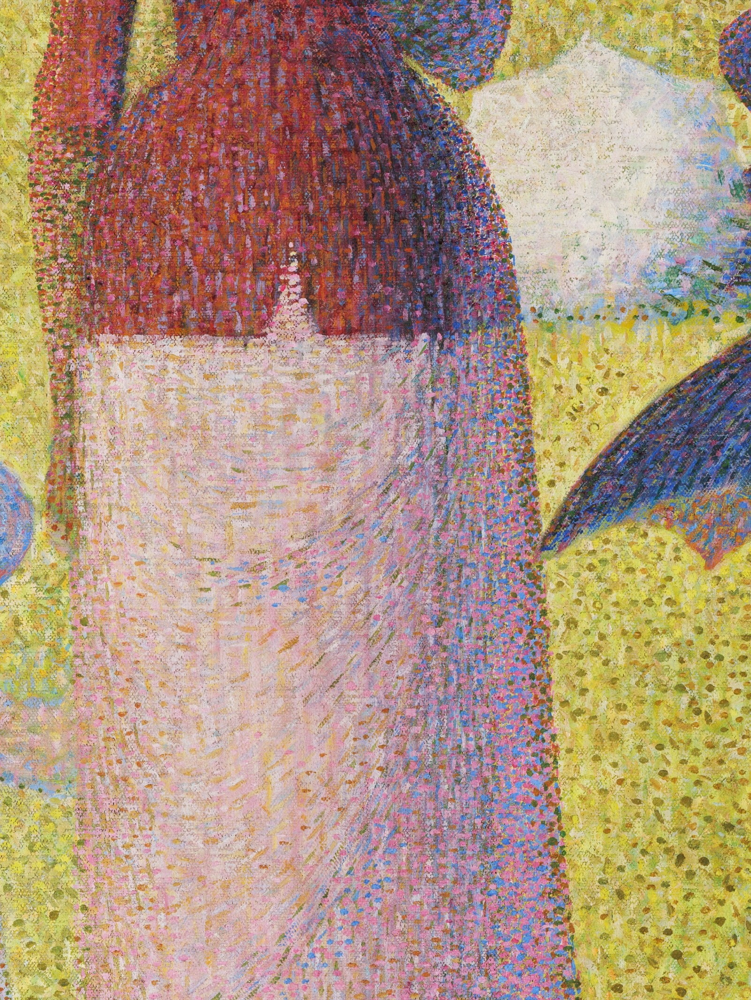
Pure colour, dot beside dot. Your eye does the mixing. In 1886 the critic Félix Fénéon gave it a name: Neo-Impressionism.
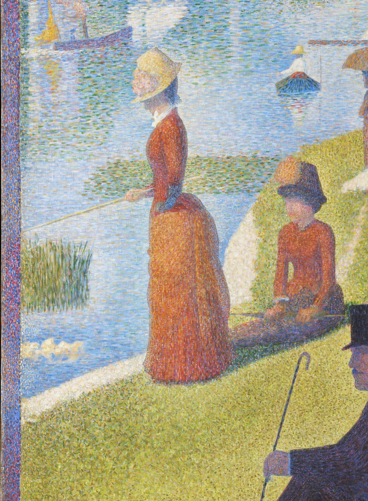
Pêcher · pécher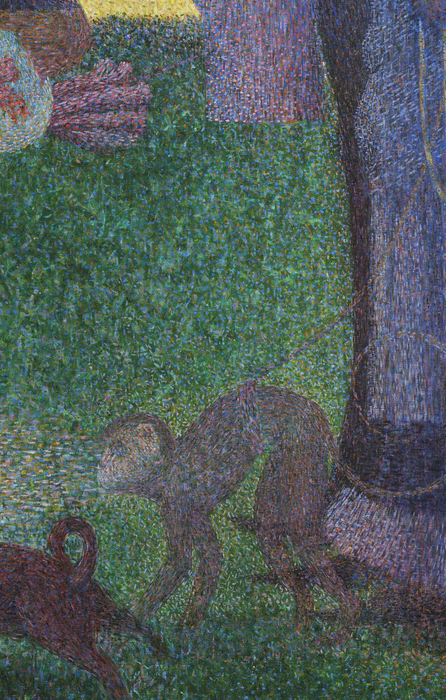
SingesseSingesse, a female monkey, was slang for a kept woman. Pêcher, to fish, sounds like pécher, to sin. Many historians think Seurat was teasing his Sunday crowd.
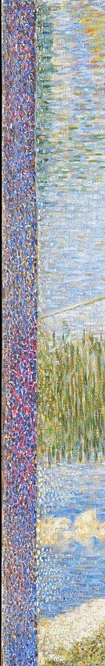
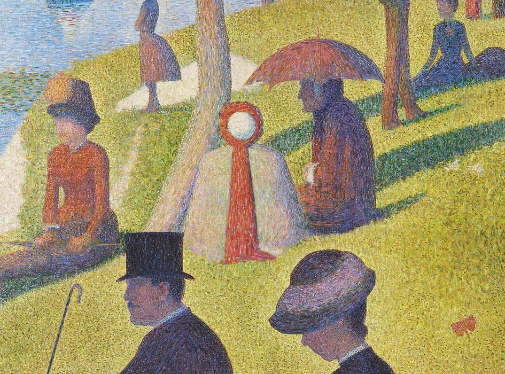
For his brightest highlights Seurat used zinc yellow. It began turning brown in his own lifetime. The lawn you see is dimmer than the one he painted.
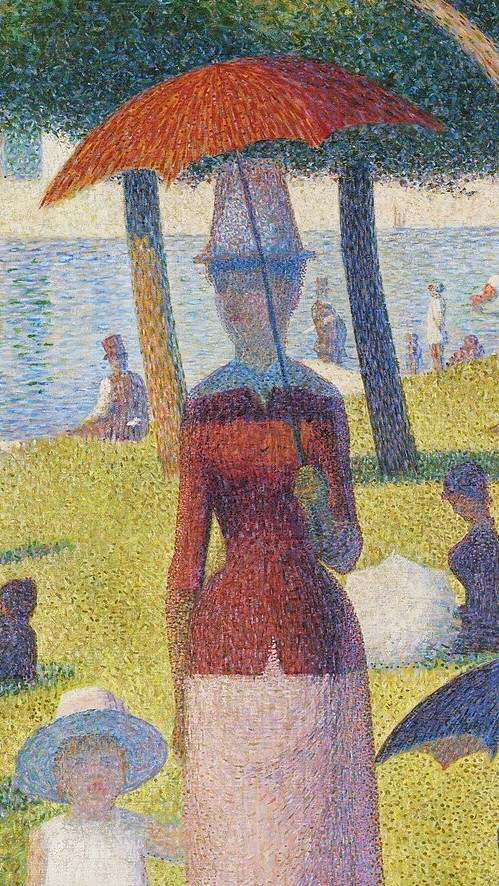
Watch the reel — then save this for your next museum day.